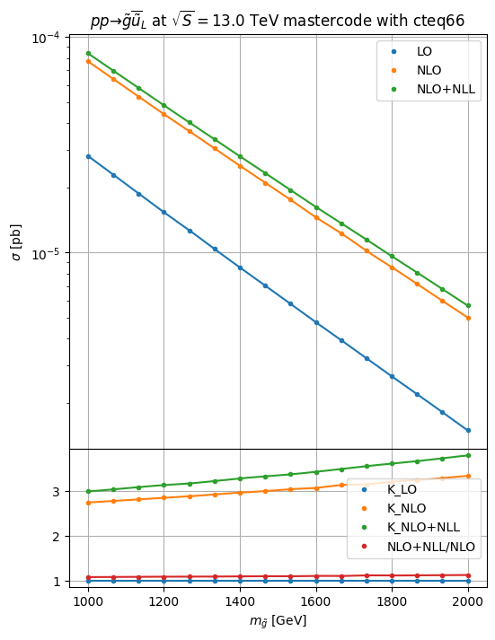

nll-fast¶
[1]:
import hepi
print(hepi.__version__)
import smpl
import numpy as np
import hepi.util as util
import matplotlib.pyplot as plt
from hepi.run import nllfast as nll
# set the folder where the resummino binary can be found either in either ./{,bin,bin/build}/resummino
nll.set_path("/home/apn/git/nll-fast/nll-fast")
# By default hepi will run with nice -n5 to prevent overloading the system if more scans than cores are running
#rs.set_pre("") disables any prefixing with nice
print (nll.get_path())
0.2.10.6
/home/apn/git/nll-fast/nll-fast
[4]:
%%time
params = [
"mastercode_with_gm2.in", # baseline slha file in the relative ./output folder by default unless set_output_dir was used
]
pss = [
(1000021,-1000002), # Final state particles for resummino to run
]
for pa,pb in pss:
for param in params:
# All the inputs Order, CMS in GeV, particle 1, particle 2, slha, pdf_lo, pdf_nlo,mu_f, mu_r
i = hepi.Input(hepi.Order.NLO_PLUS_NLL,13000,pa,pb,param,"cteq6l1","cteq66",1., 1.,id=4)
li = [i] # li is our list of inputs that we want resummino to run
li = hepi.mass_scan([i],pa, np.linspace(1000,2000,16)) # we scan the slepton mass from 100 to 1000 at 15 equidistant points
rs_dl = nll.run(li,skip=False,n_jobs=1) # run resummino, skipping if the result already exists.
# rs_dl is a panda table(dataframe) with all inputs and result
_,axs = hepi.init_double_plot()
# hepi has some useful plotting routines, but the results from rs_dl can easily be accessed
# Now plot the mass of PDG id pa from the results at LO ,NLO and aNNLO+NLL
hepi.mass_plot(rs_dl,["LO","NLO","NLO_PLUS_NLL"],pa,axes=axs[0],tight=False)
# Plot K factors vs LO and aNNLO+NLL/NLO
hepi.mass_plot(rs_dl,["K_LO","K_NLO","K_NLO_PLUS_NLL","NLO_PLUS_NLL_OVER_NLO"],pa, yaxis=None, axes=axs[1],logy=False,tight=False)
# construct a title from the inputs
hepi.title(li[0],axs[0],scenario="mastercode")
/home/apn/git/HEPi/hepi/util.py:101: UserWarning: LHAPDF python binding not installed? Make sure you set PYTHONPATH correctly (i.e. correct python version) if you want to compute PDF uncertainties.
warnings.warn(
Skipped: 0 Not skipped: 16
CPU times: user 1.27 s, sys: 101 ms, total: 1.37 s
Wall time: 1.52 s

[5]:
rs_dl
[5]:
| LO | NLO | NLO_PLUS_NLL | aNNLO_PLUS_NNLL | K_LO | K_NLO | K_NLO_PLUS_NLL | NLO_PLUS_NLL_OVER_NLO | K_aNNLO_PLUS_NNLL | aNNLO_PLUS_NNLL_OVER_NLO | ... | id | model | mu | mass_1000021 | runner | nf_final_state_in | nf_pdf | nf_squark_mass | nf_gluino_mass | nf_deg | |
|---|---|---|---|---|---|---|---|---|---|---|---|---|---|---|---|---|---|---|---|---|---|
| 0 | (2.8099999999999996+/-0)e-05 | (7.71+/-0)e-05 | (8.4+/-0)e-05 | None | 1.0+/-0 | 2.743772241992883+/-0 | 2.9893238434163707+/-0 | 1.0894941634241246+/-0 | None | None | ... | 4 | 2535.329050 | 1000.000000 | NLLfastRunner-? | sg | cteq | 4070.6581 | 1000.000000 | 10 | |
| 1 | (2.3+/-0)e-05 | (6.390000000000001+/-0)e-05 | (6.9799999999999995+/-0)e-05 | None | 1.0+/-0 | 2.7782608695652176+/-0 | 3.0347826086956524+/-0 | 1.0923317683881064+/-0 | None | None | ... | 4 | 2568.662383 | 1066.666667 | NLLfastRunner-? | sg | cteq | 4070.6581 | 1066.666667 | 10 | |
| 2 | (1.88+/-0)e-05 | (5.289999999999999+/-0)e-05 | (5.8+/-0)e-05 | None | 1.0+/-0 | 2.8138297872340425+/-0 | 3.0851063829787235+/-0 | 1.0964083175803403+/-0 | None | None | ... | 4 | 2601.995717 | 1133.333333 | NLLfastRunner-? | sg | cteq | 4070.6581 | 1133.333333 | 10 | |
| 3 | (1.54+/-0)e-05 | (4.39+/-0)e-05 | (4.819999999999999+/-0)e-05 | None | 1.0+/-0 | 2.85064935064935+/-0 | 3.1298701298701297+/-0 | 1.0979498861047836+/-0 | None | None | ... | 4 | 2635.329050 | 1200.000000 | NLLfastRunner-? | sg | cteq | 4070.6581 | 1200.000000 | 10 | |
| 4 | (1.27+/-0)e-05 | (3.6599999999999997+/-0)e-05 | (4.02+/-0)e-05 | None | 1.0+/-0 | 2.8818897637795278+/-0 | 3.1653543307086616+/-0 | 1.0983606557377048+/-0 | None | None | ... | 4 | 2668.662383 | 1266.666667 | NLLfastRunner-? | sg | cteq | 4070.6581 | 1266.666667 | 10 | |
| 5 | (1.0399999999999998+/-0)e-05 | (3.0399999999999996+/-0)e-05 | (3.3499999999999996+/-0)e-05 | None | 1.0+/-0 | 2.9230769230769234+/-0 | 3.2211538461538467+/-0 | 1.1019736842105263+/-0 | None | None | ... | 4 | 2701.995717 | 1333.333333 | NLLfastRunner-? | sg | cteq | 4070.6581 | 1333.333333 | 10 | |
| 6 | (8.54+/-0)e-06 | (2.53+/-0)e-05 | (2.7999999999999994+/-0)e-05 | None | 1.0+/-0 | 2.9625292740046842+/-0 | 3.2786885245901636+/-0 | 1.1067193675889326+/-0 | None | None | ... | 4 | 2735.329050 | 1400.000000 | NLLfastRunner-? | sg | cteq | 4070.6581 | 1400.000000 | 10 | |
| 7 | (7.040000000000001+/-0)e-06 | (2.11+/-0)e-05 | (2.34+/-0)e-05 | None | 1.0+/-0 | 2.997159090909091+/-0 | 3.3238636363636362+/-0 | 1.1090047393364928+/-0 | None | None | ... | 4 | 2768.662383 | 1466.666667 | NLLfastRunner-? | sg | cteq | 4070.6581 | 1466.666667 | 10 | |
| 8 | (5.79+/-0)e-06 | (1.76+/-0)e-05 | (1.9499999999999997+/-0)e-05 | None | 1.0+/-0 | 3.03972366148532+/-0 | 3.3678756476683938+/-0 | 1.1079545454545454+/-0 | None | None | ... | 4 | 2801.995717 | 1533.333333 | NLLfastRunner-? | sg | cteq | 4070.6581 | 1533.333333 | 10 | |
| 9 | (4.760000000000001+/-0)e-06 | (1.4599999999999997+/-0)e-05 | (1.63+/-0)e-05 | None | 1.0+/-0 | 3.0672268907563023+/-0 | 3.4243697478991595+/-0 | 1.1164383561643836+/-0 | None | None | ... | 4 | 2835.329050 | 1600.000000 | NLLfastRunner-? | sg | cteq | 4070.6581 | 1600.000000 | 10 | |
| 10 | (3.9299999999999997+/-0)e-06 | (1.23+/-0)e-05 | (1.3699999999999999+/-0)e-05 | None | 1.0+/-0 | 3.1297709923664128+/-0 | 3.486005089058524+/-0 | 1.113821138211382+/-0 | None | None | ... | 4 | 2868.662383 | 1666.666667 | NLLfastRunner-? | sg | cteq | 4070.6581 | 1666.666667 | 10 | |
| 11 | (3.2400000000000007+/-0)e-06 | (1.02+/-0)e-05 | (1.15+/-0)e-05 | None | 1.0+/-0 | 3.148148148148148+/-0 | 3.5493827160493825+/-0 | 1.1274509803921569+/-0 | None | None | ... | 4 | 2901.995717 | 1733.333333 | NLLfastRunner-? | sg | cteq | 4070.6581 | 1733.333333 | 10 | |
| 12 | (2.67+/-0)e-06 | (8.56+/-0)e-06 | (9.629999999999999+/-0)e-06 | None | 1.0+/-0 | 3.2059925093632957+/-0 | 3.606741573033708+/-0 | 1.125+/-0 | None | None | ... | 4 | 2935.329050 | 1800.000000 | NLLfastRunner-? | sg | cteq | 4070.6581 | 1800.000000 | 10 | |
| 13 | (2.21+/-0)e-06 | (7.160000000000001+/-0)e-06 | (8.090000000000002+/-0)e-06 | None | 1.0+/-0 | 3.2398190045248874+/-0 | 3.6606334841628962+/-0 | 1.1298882681564244+/-0 | None | None | ... | 4 | 2968.662383 | 1866.666667 | NLLfastRunner-? | sg | cteq | 4070.6581 | 1866.666667 | 10 | |
| 14 | (1.82+/-0)e-06 | (5.9799999999999995+/-0)e-06 | (6.779999999999999+/-0)e-06 | None | 1.0+/-0 | 3.2857142857142856+/-0 | 3.725274725274725+/-0 | 1.1337792642140467+/-0 | None | None | ... | 4 | 3001.995717 | 1933.333333 | NLLfastRunner-? | sg | cteq | 4070.6581 | 1933.333333 | 10 | |
| 15 | (1.5+/-0)e-06 | (5.000000000000001+/-0)e-06 | (5.68+/-0)e-06 | None | 1.0+/-0 | 3.3333333333333335+/-0 | 3.7866666666666666+/-0 | 1.136+/-0 | None | None | ... | 4 | 3035.329050 | 2000.000000 | NLLfastRunner-? | sg | cteq | 4070.6581 | 2000.000000 | 10 |
16 rows × 43 columns
[ ]: